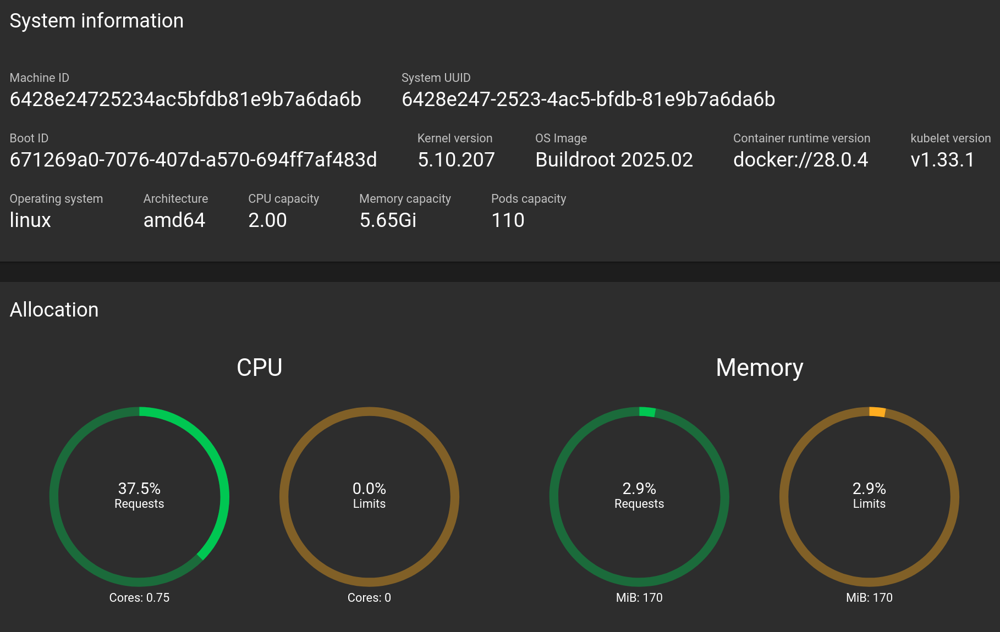

Lesson 0: Kubernetes Dashboard
The Kubernetes Dashboard is a web-based UI providing cluster information and
deployment status in Kubernetes. It will give visual feedback for the commands
you'll be running during the workshop and help you understand the state of a
cluster at a glance. While the dashboard may be used to directly manage a
Kubernetes cluster, we will take the more explicit approach to
management with the Kubernetes CLI, kubectl.
⚠️ Commands in the lessons should be run in a Linux/WSL/Mac OS terminal, or a Windows equivalent (Command Prompt or Power shell)
Dashboard Access
minikube has built-in support for the Kubernetes Dashboard. First, start a cluster if you have not already:
minikube start
Then, launch the dashboard with
minikube dashboard
This should open the web UI in a browser window. Alternatively, run minikube
dashboard --url and copy the URL.
⚠️ You will need to leave the terminal process open (or fork the command into the background) to maintain access to the dashboard.
Dashboard Overview
The dashboard is organised into several sections. We'll focus on the parts immediately relevant for getting started: Workloads, Cluster Nodes and Namespaces. In subsequent lessons, we will also introduce ingress, storage volumes and config maps.
Workloads
Workloads shows the applications running in your cluster, including
- Deployments: High-level specifications for running applications
- Pods: Provide instances of you application (the smallest deployable units in Kubernetes)
- Replica Sets: Ensure the desired number of pods are running
For now, Workloads will be mostly empty since we haven't deployed any applications.
Cluster Information
Navigate to Cluster > Nodes to view information about your minikube cluster.
Here you'll see a single minikube node, which represents the virtual machine
running your Kubernetes cluster.
Clicking on the node name (minikube) will show detailed information including CPU and memory allocation, system information, and running pods. You'll notice several pods already running for essential system services, such as storage provision and network routing—plus a pod for the dashboard.

minikube system information in the dashboard (Cluster > Nodes > minikube)
Namespaces
The dropdown menu next to the search bar at the top of the dashboard allows you to filter by namespace. Namespaces are a fundamental Kubernetes concept. They provide a way to organise and isolate resources within a cluster.
In this workshop, we will work in the default namespace, which is
created automatically. In the real-world, you may want to use
namespaces to divide resources between projects, teams or environments (e.g.,
dev, prod). You may find it helpful to explore the kube-system namespace
to see what's running behind the scenes
💡 Tips
- Keep the dashboard open to see the effect of
kubectlcommands in real-time - Green typically mean healthy/running, yellow pending/updating, and red an error state
- Click on any resource name to get detailed information and logs
📚 Further Reading
- Official Kubernetes Dashboard Documentation
- Power-users may be interested in the k9s terminal-based UI or the Lens IDE